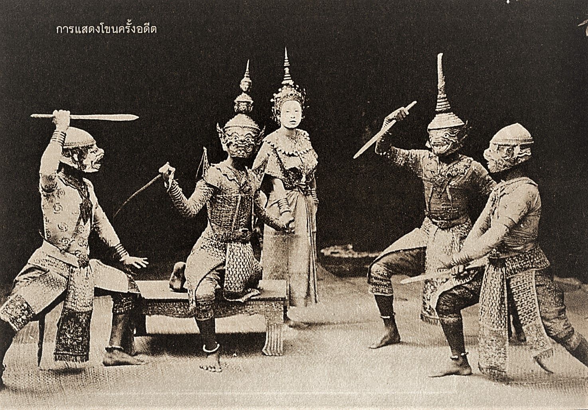
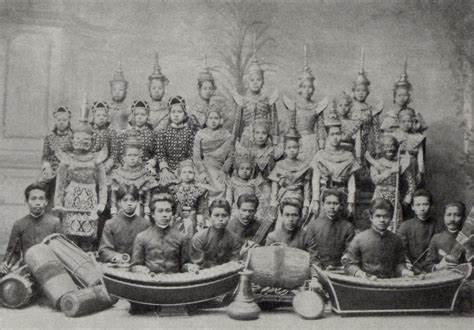

loading
buttons
forms
switches
cards
buttons
loading
หลังจากปราบดาภิเษกขึ้นเป็นพระมหากษัตริย์ในปี พ.ศ. 2325 แล้วสมเด็จเจ้าพระยามหากษัตริย์ศึกทรงใช้พระนามว่า "พระบาทสมเด็จพระพุทธยอดฟ้าจุฬาโลก" และได้ย้ายราชธานีจากกรุงธนบุรีข้ามแม่น้ำเจ้าพระยามายังฝั่งตรงข้าม และตั้งชื่อราชธานีใหม่นี้ว่า "กรุงเทพมหานคร" พร้อมๆ กับการสถาปนาราชวงศ์จักรีขึ้นมา พระองค์ทรงฟื้นฟูขวัญกำลังใจให้กับประชาชนที่ยังหวาดผวากับศึกพม่าเมื่อครั้งสงคราวเสียกรุงศรีอยุธยา ด้วยการนำแบบแผนต่างๆของราชสำนักอยุยามาใช้ รวมทั้งอัญเชิญพระพุทธรูปสำคัญมาไว้ที่กรุงเทพฯด้วย วัดพระศรีรัตนศาสดารามหรือวัดพระแก้ว เป็นแบบอย่างชัดเจนที่พระองค์ทรงระดมช่างฝีมือซึ่งหลงเหลืออยู่ในเวลานั้นมาสร้างพระราชวังและพระอารามที่ยิ่งใหญ่แห่งนี้ เสมือนยกเอายุครุ่งเรืองของกรุงศรีอยุธยามาไว้ยังกรุงเทพฯ
โขนเป็นศิลปะการแสดงชั้นสูงของไทยมีมาตั้งแต่สมัยกรุงศรีอยุธยา มีการพัฒนาและปรับเปลี่ยนให้เป็นไปตามยุคสมัย เพื่อเป็นการเพิ่มอรรถรสในการชมโขนให้มากขึ้น แต่ยังคงความเป็นเอกลักษณ์ของผู้แสดงที่ต้องสวมหน้ากาก (หัวโขน) ให้ตรงตามลักษณะของผู้แสดง เช่น ยักษ์ ลิง เป็นต้น ส่วนตัวพระ ตัวนาง และเทวดา สมัยก่อนก็สวมหัวโขน แต่ปัจจุบันใช้หน้าผู้แสดงไม่ต้องสวมหัวโขนแล้ว การดำเนินเรื่องหรือคำนำเล่าเรื่อง เป็นทำนองเรียกว่าการพากย์อย่างหนึ่งและการเจรจาอีกอย่างหนึ่ง โดยใช้กาพย์ยานีและกาพย์ฉบัง โดยมีผู้ให้เสียงแทน เรียกว่า ผู้พากย์ และผู้เจรจา ผู้ต้นเสียงและลูกคู่ร้องบทให้ ใช้วงปี่พาทย์ ประกอบการแสดง สามารถกล่าวได้ว่า โขน เป็นจุดศูนย์รวมของศาสตร์และศิลป์หลากหลายแขนง เช่น วรรณกรรม วรรณศิลป์ นาฎศิลป์ คีตศิลป์ หัตถศิลป์ การแสดงโขนในไทยนิยมแสดงเรื่องรามเกียรติ์ ในอดีตกรมศิลปากรเคยจัดแสดงเรื่องอุณุรุท แต่ได้รับความนิยมไม่มากเท่ากับเรื่องรามเกียรติ์ เนื่องจากเนื้อเรื่องเป็นการทำสงครามระหว่างกองทัพพระรามกับทศกัณฐ์ ซึ่งมีความสนุกสนานและตัวละครมากมายทั้งยังให้คติเตือนใจในการปกครองและการประพฤติตนในเรื่องความสามัคคี ความเสียสละ ความอดทน ความซื่อสัตย์ และความกล้าหาญ
ชุดการแสดงโขน หากพูดถึงความนิยมการชมมหรสพในยุคสมัยกรุงศรีอยุธยาและสืบทอดกันต่อมาจนถึงสมัยกรุงรัตนโกสินทร์ โขนถือเป็นการแสดงอันดับต้น ๆ ที่คนเฝ้ารอการแสดง แต่เมื่อกาลเวลาเปลี่ยนผ่านไปความเจริญด้านต่าง ๆ มีมากขึ้น การชมการแสดงมีความหลากหลายเพิ่มมากขึ้นการแสดงโขนที่ได้รับความนิยมเริ่มลดลง ดังเห็นได้จากในปีพุทธศักราช 2546 สมเด็จพระกนิษฐาธิราชเจ้า กรมสมเด็จพระเทพรัตนราชสุดาฯ สยามบรมราชกุมารี กราบบังคมทูลว่า การแสดงโขนกำลังซบเซา ขาดคนดู สมเด็จพระนางเจ้าสิริกิติ์พระบรมราชินีนาถ พระบรมราชชนนีพันปีหลวง มีพระราชเสาวนีย์ว่า "ไม่มีใครดูแม่จะดูเอง” จากพระราชเสาวนีย์ เมื่อมีการเสด็จพระราชดำเนินทรงเยี่ยมราษฎรในภูมิภาคต่าง ๆ สมเด็จพระกนิษฐาธิราชเจ้า กรมสมเด็จพระเทพรัตนราชสุดาฯ สยามบรมราชกุมารี ทรงให้จัดแสดงโขนหน้าพระที่นั่ง มีประชาชนและผู้ตามเสด็จได้ร่วมชมด้วย โดยกรมศิลปากรจัดแสดงโขนตอนนิ้วเพชร ณ พระตำหนักภูพานราชนิเวศน์ จีงหวัดสกลนคร โขนตอนสัมนักขาหึง ณ พระตำหนักภูพิงค์ราชนิเวศน์ จังหวัดเชียงใหม่ โขนตอนยกรบ ณ วังไกลกังวล หัวหิน จังหวัดประจวบคีรีขันธ์ สมเด็จพระนางเจ้าสิริกิติ์ พระบรมราชินีนาถ พระบรมราชชนนีพันปีหลวง มีพระมหากรุณาธิคุณ พระราชทานเงินทุนให้กรมศิลปากร นำไปศึกษาพัฒนาเครื่องแต่งกายโขนให้งดงามดังอดีต อีกทั้งมีพระราชเสาวนีย์ ให้ศึกษาและปรับปรุงการแต่งหน้าโขน ในปี 2547 กรมศิลปากร ได้จัดนิทรรศการวันอนุรักษ์มรดกไทย เรื่อง "พัฒนาการเครื่องแต่งกายโขนตามพระราชเสาวนีย์" ณ พิพิธภัณฑสถานแห่งชาติ
|  |  |
พิพิธภัณฑสถานแห่งชาติ พระนคร ตั้งอยู่บริเวณ “พระราชวังบวรสถานมงคล” หรือ “วังหน้า” สร้างขึ้นเมื่อ พ.ศ.2325 ในคราวเดียวกับพระบรมมหาราชวัง พระราชวังแห่งนี้เคยเป็นที่ประทับของพระมหาอุปราชถึง 5 พระองค์ ในสมัยรัชกาลที่ 5 ได้ยกเลิกตำแหน่งพระมหาอุปราช พระราชวังแห่งนี้จึงว่างลง จึงโปรดเกล้าฯให้ “มิวเซียมหลวง” ณ ศาลาสหทัยสมาคมหรือหอคองคอเดีย ในพระบรมมหาราชวังมาตั้งแสดง สมัยรัชกาลที่ 7 โปรดเกล้าฯ พระราชทานพระราชมณเฑียรสถานในพระราชวังสถานมงคลทั้งหมดจัดตั้งเป็น “พิพิธภัณฑสถานสำหรับพระนคร” และประกาศตั้งเป็น “พิพิธภัณฑสถานแห่งชาติ พระนคร” เมื่อปี พ.ศ.2477 การจัดแสดงแบ่งเป็นเรื่อง ประวัติศาสตร์แห่งแผ่นดิน ประณีตศิลป์สืบสมัย ประวัติศาสตร์ศิลป์ไทยสืบสาน เเละ โบราณสถานวังหน้า